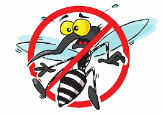
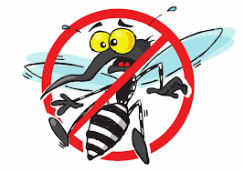

Agradecemos sinceramente a você que dedicou um pouco do seu tempo para abrir este guia e se informar sobre um tema tão importante. Esperamos que a leitura tenha sido útil e que, de alguma forma, contribua para atitudes mais conscientes no dia a dia. Seu interesse já é um passo valioso na luta contra o Aedes aegypti.
Se voce chegou até aqui e deseja apoiar a nossa iniciativa, denuncie focos de dengue encontrados na UFG no email: sara.egito2006@gmail.com
quando atingirmos determinado numero de denuncias enviaremos para orgãos publicos responsaveis.
Ministério da Saúde e Educação
Fundação Nacional de Saúde
Agentes de combate às endemias (ACE)
Movimento Saúde
UFG
Pixabay